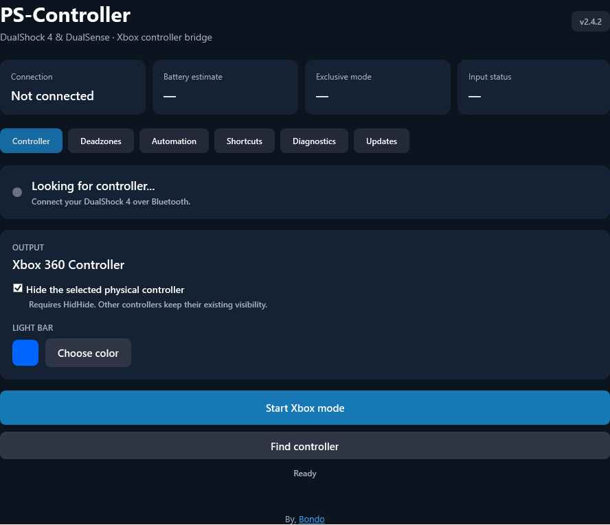

Play with your PlayStation controller.
Use a DualShock 4 or DualSense as an Xbox controller on Windows. Adjust your sticks, check your battery and keep the app up to date.
Download for Windows
Get started
- Download and run the installer.
- Restart Windows if setup asks you to.
- Connect your controller by USB or Bluetooth and start Xbox mode.